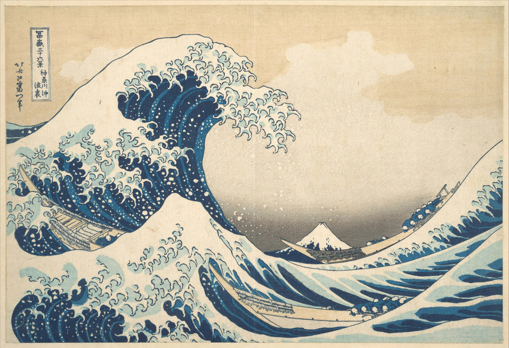

01 / RESEARCH
AI & Computer Vision
Experiments in how machines see and understand.
AN INTERNET CORNER OF MY OWN — EST. 2026
Somewhere between artificial intelligence, creative experiments, and everything in between. A little space for things I make, learn, and wonder about.
Explore my work
01 / RESEARCH
Experiments in how machines see and understand.
02 / MAKING
Crochet, illustrations and little creative experiments.
03 / PHOTOGRAPHY
Skies, places and moments worth remembering.
04 / JOURNAL
Thoughts, questions and things I'm learning.
A LITTLE ABOUT ME
Hello, I'm Shifa.
My background is in artificial intelligence and computer vision, but my curiosity rarely stays in one place.
I enjoy exploring how things work, making things with my hands, photographing the sky, and following ideas wherever they lead.
This website is a growing collection of those interests, experiments, and everything in between.
THOUGHTS & OBSERVATIONS
A place for unfinished thoughts, interesting questions, little discoveries, and whatever else finds its way here.
Notes and stories will find their way here soon.